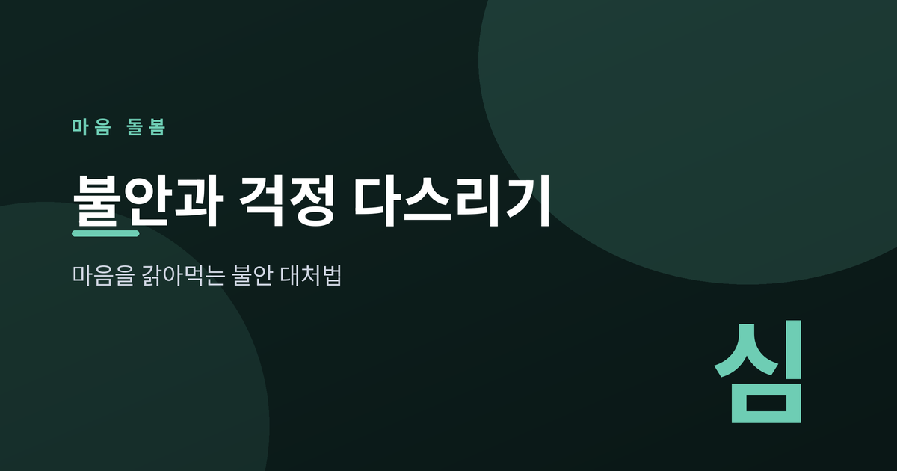
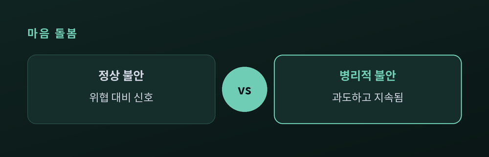
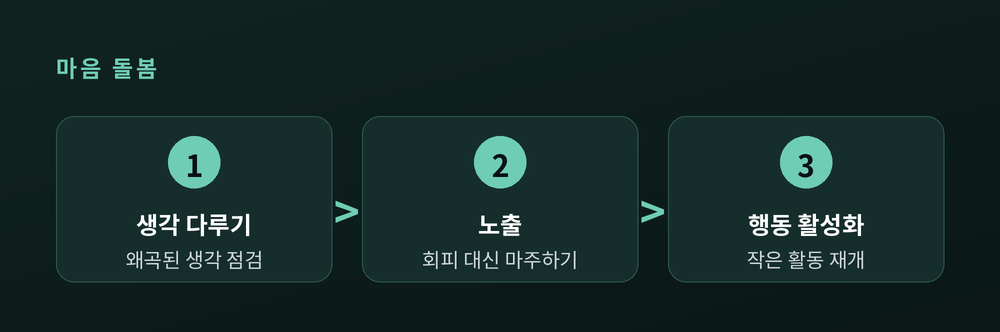
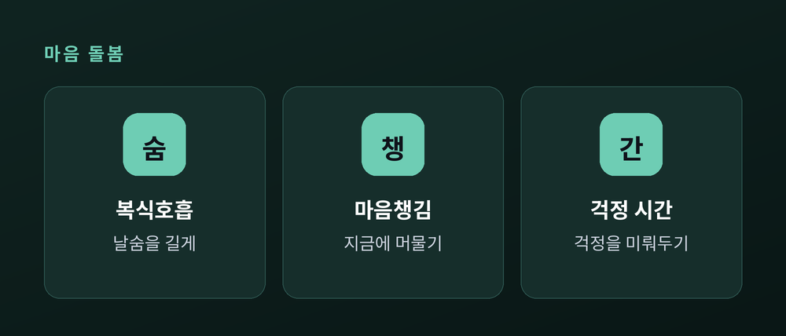

마음을 갉아먹는 불안에 대처하는 법

불안은 누구에게나 찾아옵니다. 문제는 그것이 우리를 지키는 신호에서 삶을 갉아먹는 습관으로 바뀔 때입니다. 오늘은 불안을 다스리는 근거 기반의 방법을 담담히 살펴봅니다.
불안과 두려움은 위협에 대한 정상적이고 적응적인 반응입니다. 시험을 앞두고 긴장하거나 어두운 골목에서 경계하는 마음은 우리를 준비시키고 보호합니다. 이런 불안은 상황이 지나가면 자연히 가라앉습니다.
반면 병리적 불안은 위협을 과대평가하고, 위험하지 않은 상황에서도 과도하게 오래 지속됩니다. 지나친 걱정, 과도한 경계, 회피 행동이 일상 기능을 방해할 때 우리는 도움이 필요한 지점에 서 있는 것입니다.

걱정과 반추는 미래의 위협을 곱씹는 생각의 사슬입니다. 얼핏 문제를 푸는 듯 보이지만, 실제로는 문제 해결과 단절된 채 제자리를 맴돕니다.
핵심은 걱정 자체가 일종의 회피라는 점입니다. 불편한 감정을 잠시 미루려는 이 습관은 부정적 강화를 통해 굳어집니다. 회피할수록 두려움은 커지고, 커진 두려움은 다시 회피를 부릅니다.
불안은 생각과 행동을 함께 다룰 때 가장 잘 완화됩니다.

호흡과 이완은 몸의 긴장을 먼저 풀어줍니다. 특히 날숨을 길게 하는 복식호흡은 부교감신경을 자극해 각성을 낮춥니다. 하루 15분의 마음챙김 호흡 명상이 불안을 유의하게 줄였다는 연구도 있습니다.
'걱정 시간' 기법도 도움이 됩니다. 걱정이 떠오르면 짧게 적어두고, 정해둔 30분의 시간까지 미루는 방법입니다. 대부분의 걱정, 특히 가정에 불과한 걱정은 나중에 다시 보면 강도가 옅어져 있습니다.

불안은 없앨 대상이 아니라 다루는 대상입니다. 신호로서의 불안은 존중하되, 습관이 된 걱정에는 생각과 행동, 그리고 몸을 진정시키는 방법으로 천천히 개입해 봅니다. 다만 불안이 오래 지속되거나 일상을 심하게 해칠 때는, 반드시 전문 상담이나 정신건강 전문가의 도움을 권합니다.
불안은 미래를 사는 마음, 평온은 지금을 사는 마음.
오늘 하루, 걱정 하나를 잠시 내려놓아 봅니다.